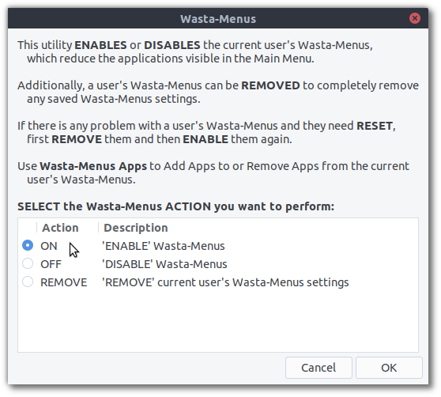
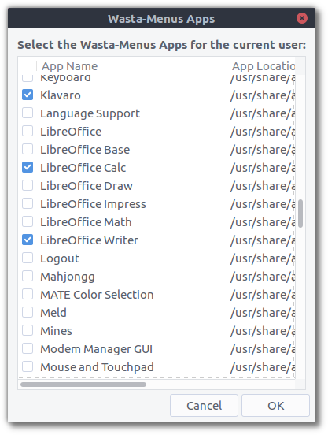

Wasta-Menus: Main Menu Application Limiting Feature
What is it?
Wasta-Menus is a simple way to only display a limited number of pplications in the system’s Main Menu for the current user.
With Wasta-Menus enabled, a Wasta-Linux computer could serve as a kiosk omputer or it could be used by beginning users who only have only been ssigned a few specific tasks on the computer. In both cases it is referable to not overwhelm the user with ALL the installed Wasta-Linux pplications in the Main Menu, but rather present a limited set of them o the user.
How do I use it?
There are 2 applications needed to use Wasta-Menus, both described elow. Both applications require an administrative password to keep urious users from being able to make modifications.
Wasta-Menus
Use this application to enable, disable, or fully remove the current user’s Wasta-Menus. Here is a screenshot: 
Simply click “On” and then click “OK” to enable a user’s Wasta-Menus. Then click on the Main Menu and you will see that only a limited number of applications are displayed. The default list of applications in Wasta-Menus can be adjusted by a regional customizer of Wasta-Linux.
In order to reset the current user’s Wasta-Menus, first remove them and then use Wasta-Menus again to enable them.
Wasta-Menus Apps
Use this application to add apps to or remove apps from the current user’s Wasta-Menus so that it will show in the Main Menu. Here is a screenshot: 
- Simply select the applications you would like to appear in the Main Menu or deselect the ones you would like to hide and click “OK”. The applications selected should now match those found in the current user’s Main Menu.